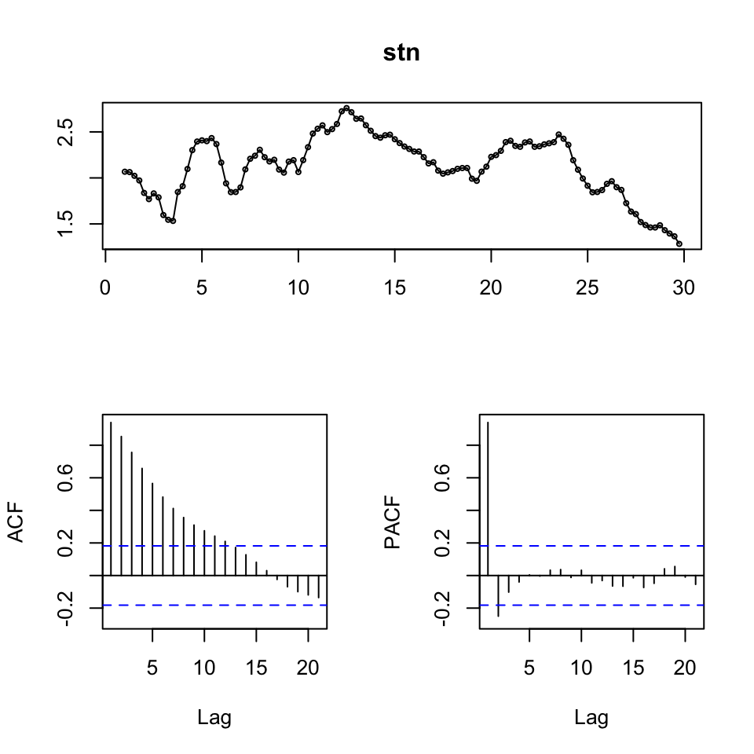
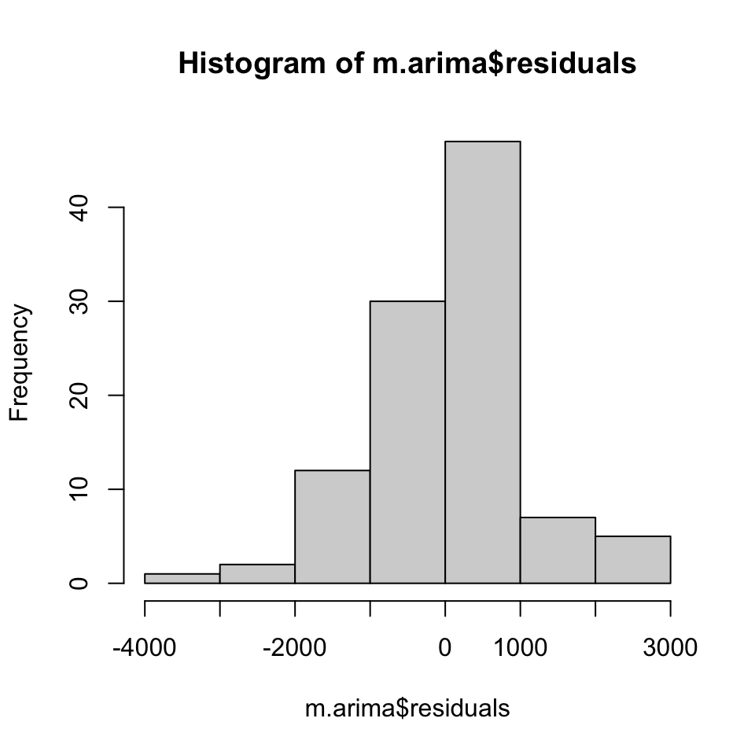
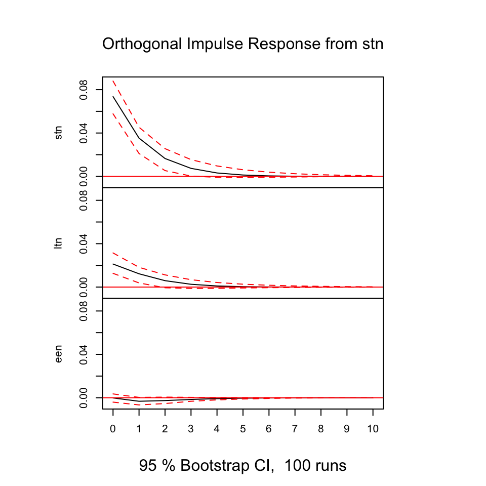
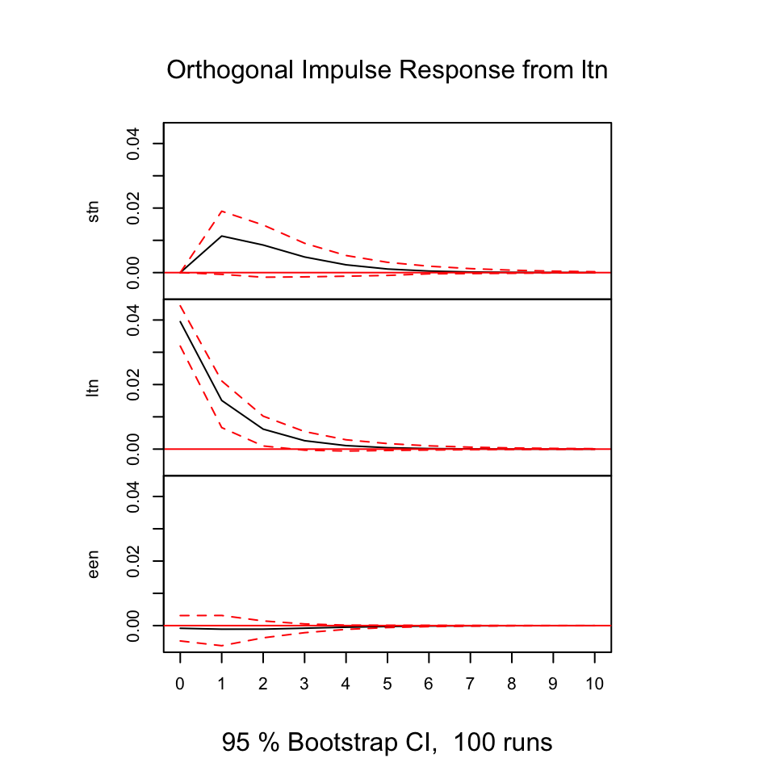
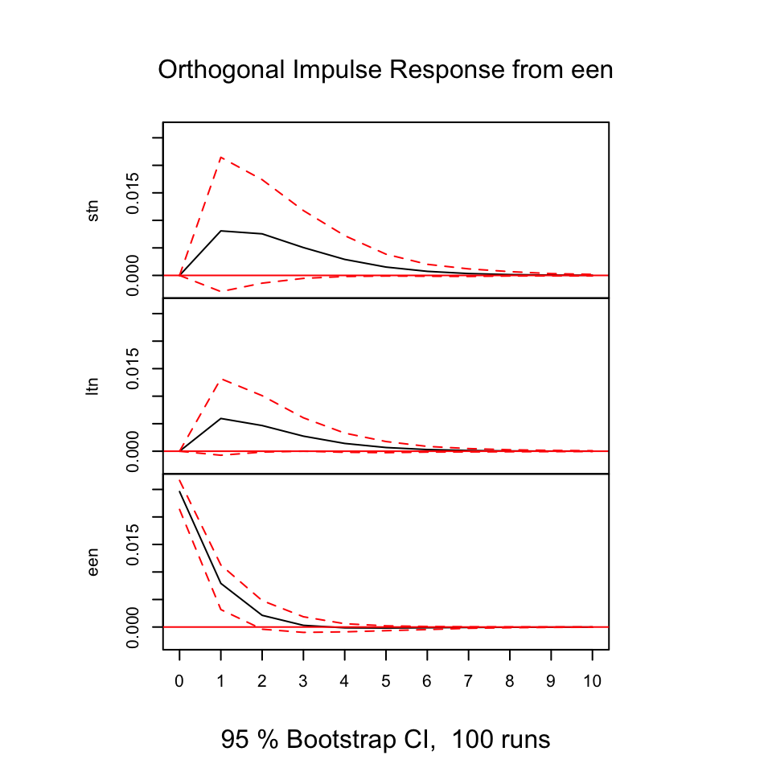

9.2 Exercises
9.2.1 Air passengers
Loading the data
df <- read_excel("Data/Week49/AirPassengers.xlsx")
y <- ts(df[,2] #The passengers variable
,start=1949
,frequency = 12)
tsdisplay(y)
We see that there is clearly an upwards trend and seasonality. Also the variance appear to be increasing, hence perhaps the composition is multiplicative.
Also looking at the ACF, it become clearer with the seasonality and trend.
To validate models, we are going to split the sample into two partitions, train and test data.
# In-sample (75%) and out-of-sample (25%) split
insamp <- ts(y[1:108] #75% of the data
,frequency = 12)
outsamp <- y[109:144] #The rest 25%. We dont care about frequency, as we just need the observation for comparison
l<-length(outsamp) #generate a number called "l" equal to the length of the test set9.2.1.1 Producing forecasts
We are going to make two forecasts:
- ARIMA
- HoltWinters
9.2.1.1.1 Forecast 1 - ARIMA
Now we can do the first forecasts.
###FORECAST 1###
# # Generating the first forecast based on ARIMA models
fit <- auto.arima(y = insamp
,seasonal = TRUE) #This is in fact redundant, but as we see seasons, we can just as well just tell R, that this is the case
summary(fit) #model of choice is ARIMA(1,1,0)(0,1,0)[12]## Series: insamp
## ARIMA(1,1,0)(0,1,0)[12]
##
## Coefficients:
## ar1
## -0.2411
## s.e. 0.0992
##
## sigma^2 estimated as 93.74: log likelihood=-350
## AIC=704 AICc=704.13 BIC=709.11
##
## Training set error measures:
## ME RMSE MAE MPE MAPE MASE
## Training set 0.3153345 9.032673 6.731484 0.07693443 2.923287 0.220178
## ACF1
## Training set 0.01032578We get a model 1,1,0 model, implying an AR and integretion.
As the ACF tend towards 0 and the pacf drastically drops after the first lag, we expected the AR(1) to be applicable, and since the data is clearly not stationary, the first order differences are also expected.
Also we see (0,1,0)[12], meaning that each period is repeated for each twelve months
Now we can make the model diagnostics.
tsdisplay(residuals(fit)
,main = 'Model Residuals')
We see that the residuals appear to be stationary. The ACF only has two spikes
9.2.1.1.2 - Continue here
fcast <- forecast(fit, h=l)
plot(fcast)
lines(y)
accuracy(fcast, outsamp)## ME RMSE MAE MPE MAPE MASE
## Training set 0.3153345 9.032673 6.731484 0.07693443 2.923287 0.3313104
## Test set -1.4834898 22.132229 17.807808 -1.08004267 4.148973 0.8764653
## ACF1
## Training set 0.01032578
## Test set NA9.2.1.1.3 Forecast 2 - HoltWinters
###FORECAST 2###
# # Now let us get a second forecast. Holt-Winters method could be a good choice.
fit2 <- HoltWinters(insamp)
fcast2 <- forecast(fit2, h=l)
plot(fcast2)
lines(y)
accuracy(fcast2, outsamp)## ME RMSE MAE MPE MAPE MASE
## Training set 1.830348 11.17066 8.422888 0.4909335 3.508573 0.414558
## Test set -19.471423 28.81229 25.032002 -5.3401845 6.288076 1.232026
## ACF1
## Training set 0.4920761
## Test set NA
##Compare and Combine forecast 1 and 2##
# # We could also use a Diebold-Mariano test to see if these forecasts are significantly different from each other.
dm.test(residuals(fcast), residuals(fcast2), h=l) #the null hypothesis is that the two methods have the same forecast accuracy. ##
## Diebold-Mariano Test
##
## data: residuals(fcast)residuals(fcast2)
## DM = -1.4435, Forecast horizon = 36, Loss function power = 2, p-value =
## 0.1518
## alternative hypothesis: two.sided
# # Finally let us check if combining these two forecasts will lead to an improvement in terms of RMSE.
#Nelson combination method
combfitN <- lm(outsamp ~ fcast$mean + fcast2$mean)
summary(combfitN)##
## Call:
## lm(formula = outsamp ~ fcast$mean + fcast2$mean)
##
## Residuals:
## Min 1Q Median 3Q Max
## -40.673 -9.467 -0.076 11.159 29.892
##
## Coefficients:
## Estimate Std. Error t value Pr(>|t|)
## (Intercept) -120.4994 18.3512 -6.566 0.000000184 ***
## fcast$mean 0.6794 0.2895 2.347 0.0251 *
## fcast2$mean 0.5734 0.2828 2.028 0.0507 .
## ---
## Signif. codes: 0 '***' 0.001 '**' 0.01 '*' 0.05 '.' 0.1 ' ' 1
##
## Residual standard error: 15.15 on 33 degrees of freedom
## Multiple R-squared: 0.9656, Adjusted R-squared: 0.9635
## F-statistic: 463.4 on 2 and 33 DF, p-value: < 0.00000000000000022#the intercept is sgnificant => there is a bias, we need to correct the data for it
outsampcor<-outsamp-combfitN$coefficients[1] #where combfitN$coefficients[1] picks out the intercept value from the estimated regression
# Now want to run an OLS without an intercept on the corrected (debiased data)
#with respect to a restriction on the weights: w1 + w2 = 1
fitW <- lm(outsampcor ~ 0+ offset(fcast$mean) + I(fcast2$mean-fcast$mean))
coef_2 <- coef(fitW)
beta_1 <- 1 - coef_2 #the weight is negative, would prefer a different combination method in this case
beta_2 <- coef_2
#beta_1 and beta_2 will give you the weigths.
# Now can use those weights to obtain a combination forecast
combfcastN <-beta_1*fcast$mean+beta_2*fcast2$mean
plot(combfcastN)
accuracy(combfcastN, outsamp) #can see that in this case the forecast combination performes worse than the individual forecasts## ME RMSE MAE MPE MAPE
## Test set -99.4267 110.0852 99.4267 -24.27626 24.27626
#Granger-Ramanathan combination method
combfit <- lm(outsamp ~ fcast$mean + fcast2$mean)
summary(combfit) #the coefficients in the regression will give you the weights##
## Call:
## lm(formula = outsamp ~ fcast$mean + fcast2$mean)
##
## Residuals:
## Min 1Q Median 3Q Max
## -40.673 -9.467 -0.076 11.159 29.892
##
## Coefficients:
## Estimate Std. Error t value Pr(>|t|)
## (Intercept) -120.4994 18.3512 -6.566 0.000000184 ***
## fcast$mean 0.6794 0.2895 2.347 0.0251 *
## fcast2$mean 0.5734 0.2828 2.028 0.0507 .
## ---
## Signif. codes: 0 '***' 0.001 '**' 0.01 '*' 0.05 '.' 0.1 ' ' 1
##
## Residual standard error: 15.15 on 33 degrees of freedom
## Multiple R-squared: 0.9656, Adjusted R-squared: 0.9635
## F-statistic: 463.4 on 2 and 33 DF, p-value: < 0.00000000000000022combfcast <- ts(combfit$fitted.values, frequency = 12)
plot(combfcast)
accuracy(combfcast, outsamp)## ME RMSE MAE MPE MAPE
## Test set -0.000000000000003158498 14.50372 11.62376 -0.06542481 2.758189library(readr)
library(readxl)
library(forecast)
library(tseries)
library(knitr)
library(stats)
library(car)